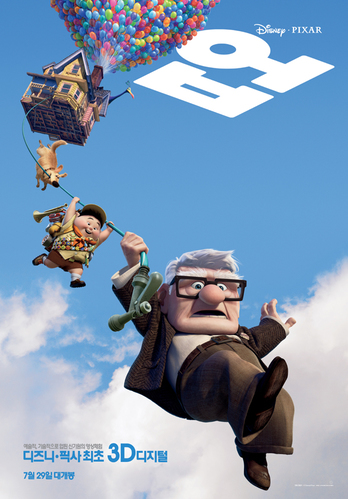

| 1 |
미드 나잇 인 파리 |
|
매일 밤 12시, 시간을 넘나드는 로맨스가 시작된다!
약혼자 '이네즈'(레이첼 맥아담스)를 두고
홀로 파리의 밤거리를 배회하던 '길'(오웬 윌슨)은
종소리와 함께 홀연히 나타난 차에 올라타게 되고
그곳에서 1920년대를 대표하는 예술가들과 조우하게 된다.
그 날 이후 매일 밤 1920년대로 떠난 '길'은
평소에 동경하던 예술가들과 친구가 되어 꿈 같은 시간을 보내게 되고
헤밍웨이와 피카소의 연인이자 뮤즈인 ‘애드리아나’(마리옹 꼬띠아르)를 만나게 된다.
시간이 지날수록 ‘길’은 예술과 낭만을 사랑하는 매혹적인 그녀에게 빠져들게 되는데…
세기를 초월한 사랑은 이뤄질 수 있을까?
|
바로 가기
|
| 2 |
다크 나이트 라이즈 |

|
배트맨’ vs. ‘베인’, 운명을 건 최후의 전투
다크 나이트 신화의 전설이 끝난다.
배트맨이 조커와의 대결을 끝으로 세상에서 모습을 감춘 8년 후,
하비 덴트의 죽음에 대한 책임을 떠안은 배트맨은 모든 것을 희생하며 떠나고..
범죄방지 덴트법으로 인해 한동안 평화가 지속되던 고담시의 파멸을 예고하며 나타난 마스크를 쓴 잔인한 악당,
최강의 적 베인이 등장한다.
베인은 배트맨이 스스로 택한 유배 생활에 종지부를 찍게 하지만,
다시 돌아온 배트맨에게 베인은 만만한 상대가 아니다.
자신을 거부한 사람들의 고통을 지켜볼 것인가, 정의의 수호자로 나설 것인가.
배트맨은 승패를 알 수 없는 마지막 전투를 시작하려 하는데…
|
바로 가기
|
| 3 |
업 |

|
한방울 눈물과 한바탕 웃음! 마음 속에 담고 싶은 단 하나의 걸작
평생 모험을 꿈꿔 왔던 ‘칼’ 할아버지는 수천 개의 풍선을 매달아 집을 통째로 남아메리카로 날려 버리는데,
‘칼’ 할아버지의 이 위대한 모험에 초대 받지 않은 불청객이 있었으니,
바로 황야의 탐험가 ‘러셀’! 지구상에 둘도 없을 이 어색한 커플이 함께 하는 대모험.
그들은 과연 남미의 잃어버린 세계에서 사라져 버린 꿈과 희망, 행복을 다시 찾을 수 있을까?
|
바로 가기
|
| 4 |
클래식 |
|
우연히, 우연히, 우연히... 그러나... 반드시 잊혀진 약속이 깨어났다.
같은 대학에 다니는 지혜(손예진)와 수경은 연극반 선배 상민(조인성)을 좋아한다. 하지만 호들갑스런 수경이 상민에게 보낼 편지의 대필을 부탁하고, 지혜는 수경의 이름으로 상민을 향한
자신의 감정을 고백한다. 지혜의 편지로 맺어진 수경과 상민이 가까워지면서 지혜는 괜한 죄의식에 상민을 멀리 하려 하지만, 우연하게도 자꾸만 마주치게 된다.
오래 전, 사랑은 이미 시작되었다... 한편, 아빠를 일찍 여읜 지혜는 지금은 해외 여행 중인 엄마 주희와 단둘이 살다. 엄마의 빈자리를 털기 위해 다락방을 청소하던 지혜는 우연히 엄마의
비밀 상자를 발견하게 된다. 주희의 첫사랑의 기억이 고스란히 담겨있는 비밀 상자를 보면서 지혜는 엄마의 클래식한 사랑을 조금씩 알게 된다.
|
바로 가기
|
| 5 |
인턴 |
|
프라다 입은 악마를 벗어난 '앤 해서웨이',
수트 입은 70세 인턴 '로버트 드 니로'를 만나다!
창업 1년 반 만에 직원 220명의 성공신화를 이룬 줄스(앤 해서웨이). TPO에 맞는 패션센스, 업무를 위해 사무실에서도 끊임 없는 체력관리, 야근하는 직원 챙겨주고, 고객을 위해
박스포장까지 직접 하는 열정적인 30세 여성 CEO! 한편, 수십 년 직장생활에서 비롯된 노하우와 나이만큼 풍부한 인생경험이 무기인 만능 70세의 벤(로버트 드 니로)을 인턴으로 채용하게
되는데..
|
바로 가기
|